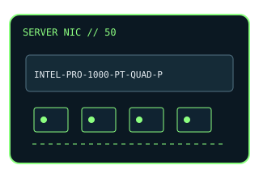

[ MODEL-SPECIFIC NETWORK HARDWARE ]
Intel PRO/1000 PT Quad Port Server Adapter EXPI9404PTL
Four-port PCI Express Gigabit Ethernet adapter for server use. This entry uses the labeled manufacturer model identifier and cites primary product/support documentation.

MODEL IDENTIFICATION: Match the complete model/part number and hardware revision on the item label to manufacturer documentation. Do not apply this entry to near-name variants.
Exact specifications and compatibility
| Cataloged model | Intel PRO/1000 PT Quad Port Server Adapter EXPI9404PTL |
|---|---|
| Dedicated subcategory | Ethernet adapters |
| Bus / host interface | PCI Express x4 add-in card. |
| Ports / physical interfaces | 4 × RJ-45 copper Ethernet ports. |
| PHY, radio or protocol | Intel 82571EB controller; 10/100/1000BASE-T Ethernet. |
| PoE | No PoE source or PoE input is documented for this adapter. |
| Link-rate vs throughput | Up to 1Gb/s link rate per port; not a measured aggregate throughput result. Nominal link rates are not measured application throughput; no physical-card benchmark is claimed. |
| Firmware / driver support | Legacy Intel PRO/1000 driver support depends on operating system; verify supported OS and driver package. |
| Compatibility checks | Confirm full EXPI9404PTL board number, PCIe slot and low/full-height bracket before installation. |
Model-specific notes
This four-port PCIe adapter is distinct from the PRO/1000 MT dual-port and desktop models in this archive.
Primary manufacturer sources
- Intel PRO/1000 PT Quad Port Server Adapter specificationsManufacturer product specification for the exact model.
- Intel support and compatibility resourcesDriver, firmware, compatibility or lifecycle details; applicability depends on exact host and OS.